        <main id="main_content">
            <div id="container">
        <div class="main-div">

            <h2>Ribeirão da Paciência</h2>
            <div class="content-intro">
                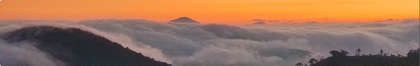

                <p>For the writing of this piece we walked along the Ribeirão da Paciência, one of
                    the main rivers in our neighborhood. We literally walked in the river, got our feet wet
                    and hydrated our ideas.
                    We walked in search for the intersections between our common goods: the water and the
                    internet, in the small scale in which it presents itself in our surroundings.</p>
                <p>We are in Monteiro Lobato, in the Serra da Mantiqueira, a mountain range in
                    southeastern Brazil known for its waters, as its indigenous name implies:
                    Mantiqueira , the mountains that cry.</p>
                <p>Follow our report and reflections about the path of water and information.</p>
                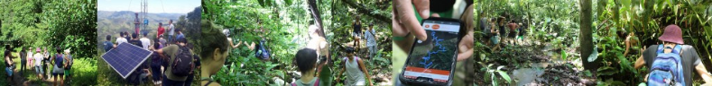
            </div>
            <div class="content">
                <div class="content-foreground full">
                    <div class="flex">
                        <div class="forty">
                            <div class="flex">
                                <div>
                                    We went deep into the bush with the
                                    environmental education teacher from
                                    the neighborhood school. This is a video
                                    of one of the springs that make up the
                                    patience
                                </div>
                                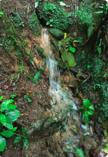

                                <h4>The dawn of PSP</h4>

                                <p>We are Portal sem porteiras ( portal
                                    without gates), a communication
                                    association and community internet
                                    network. We were born in 2017, from
                                    our urge to be collective in our
                                    communication process. Our action is
                                    local, in the community we live in.</p>

                                
                                <p>scanned lead collected along the way.</p>

                                <h4>From what source does the
                                    Internet sprout?</h4>
                                <p>
                                    Communication is a primary social
                                    process that is motivated by survival itself.</p>
                                <p>
                                    The water gushing out of the crack in
                                    the rock causes me the same
                                    strangeness and amazement: the
                                    earth is giving birth to life - but

                                    constantly.

                                    The womb of the earth is a mystery.

                                    ***

                                    Given its importance, the tools for this are in
                                    constant transformation, from written
                                    communication to the Internet. They are what we
                                    call communication media: tools for communication
                                    between individuals, either individually or in mass.
                                    Communication depends on biological, social and
                                    technical processes.
                                    Communication processes involving technical
                                    apparatuses are called mediated communication.
                                    This is the case of the internet, a set of computer
                                    networks that, spread over all regions of the planet, is
                                    able to exchange data and messages using a
                                    common protocol.</p>
                                <p>

                                    <strong>If :</strong>

                                    water = information
                                </p>

                                <p>/then internet needs to sprout from diverse
                                    springs. Its contents has to permeates life in
                                    many arms and affluents. This river has no
                                    center.</p>
                                <video controls class="sixty">
                                    <source src="assets/Ribeirao/video01.mp4" type="video/mp4">
                                </video>
                                <p>drinking from the fountain</p>
                                <h4>
                                    The Fountain
                                </h4>
                                <h5>
                                    poem by a neighbor
                                </h5>
                                <p>I once saw a baby being born:
                                    suddenly a small human being came
                                    out of a woman's body. It is a miracle.
                                    The water gushing out of the crack in
                                    the rock causes me the same
                                    strangeness and amazement: the
                                    earth is giving birth to life - but

                                    constantly.</p>
                                <p>The womb of the earth is a mystery.</p>
                            </div>
                        </div>
                        <div class="half ml10">
                            <h3>PART I - The Spring</h3>
                            <h4>Our river</h4>
                            <p>The river we choose to walk in is called
                                "ribeirão da paciência" (patience river). The
                                name refer to the fishing, that has always
                                required a certain amount of patience.
                                People does not fish here anymore. Are there
                                no more fish or no more patience?</p>
                            <p>
                                It is still possible to find shrimps and guarús
                                hidden in the vegetation on the banks of
                                streams, piabas in backwaters, traíras near
                                the branches in calm waters, catfish that
                                become more active when it rains and the
                                water becomes muddy, and it is also
                                possible to observe fish going up the rivers
                                to reproduce.</p>
                            <p><i>Fishing time, requires a deep connection
                                    with the environment and what flows in
                                    the internet is anxiety</i></p>

                            <div class="sixty ml20">
                                <h3>The water</h3>
                                <p>Water is omnipresent on the
                                    planet. It makes up much of
                                    organisms, people, atmosphere,
                                    and is dispersed in time and space.
                                    What sprouts from springs today
                                    could have been the constitution of
                                    an Egyptian pharaoh's body and
                                    carry minerals from geological eras
                                    before the dinosaurs.</p>

                                <p>
                                    The unexpected meeting of the
                                    dust of the Sahara desert, which
                                    crosses the Atlantic and meets the
                                    flying rivers formed by the
                                    evaporation of the Amazon forest, constitute a part of the
                                    rain that falls in our territory, passes through the soil
                                    generating food and supplying
                                    aquifers and underground
                                    rivers where it is enriched
                                    with minerals more than 2
                                    billion years old present in
                                    the constitution of the
                                    rocks of the Mantiqueira
                                    mountain range

                                </p>
                                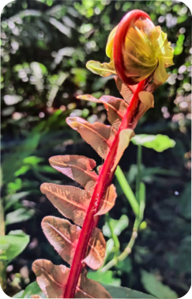
                                <p>the unraveling on the way</p>

                                <p>The improbability of these
                                    encounters between space and
                                    time alerts us: everything is
                                    connected, and this connection is both exciting and subtle.</p>
                                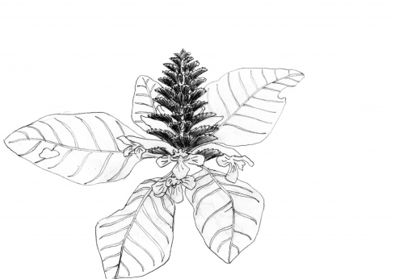
                            </div>
                        </div>
                        <strong>
                            it is the same water that runs through us, each one of us, animals, plants,
                            seas, geological eras, clouds, rivers, and mountains, it is what we have in
                            common.</strong>
                        <p>A common good is anything that benefits the entire society in counterpoint to the
                            private goods.</p>
                        <p>
                            So water is a common good just like the infrastructure of the Internet.
                            But between water and internet we have a fundamental difference: Water does not
                            belong to us as humanity, it is an interspecies common good belonging to all the
                            plurality of life forms that inhabit the earth, and it is perfect just the way it is; whereas
                            the internet is created by and for the benefit (we hope) of only the human species
                            through the manipulation of a bunch of natural resources.</p>
                        <div class="full">
                            <h3>PART II <br> The river flows</h3>
                        </div>
                        <div class="forty">
                            <video control class="full">
                                <source src="assets/Ribeirao/video02.mp4" type="video/mp4">
                            </video>

                            <p>
                                we were surprised by the rain and took shelter in

                                an old plant nursery
                            </p>

                            <p>
                                The collective management of our network is
                                always a challenge, since we have been
                                taught to outsourcing our basic needs to
                                specialized services.
                            </p>

                            <p>
                                Our expectations of internet use need to be
                                reviewed by the parameters of what we can
                                manage.
                            </p>

                            <p>
                                We choose to do it slowly - being in no hurry is

                                also a subversive act.
                            </p>
                            <h4>Flying information</h4>

                            <p>The internet is a network of computers .
                                talking the same language. But these
                                computers need to connect to each other, which
                                is what we call the internet infrastructure.
                                The internet infrastructure is made up of many
                                layers and technologies. The simplest are
                                cables, the first way to connect one computer to
                                another. Another technology used in this
                                infrastructure is via radio, the possibility to send

                                information in the form of

                                electromagnetic waves through the air It is from
                                this possibility of the spectrum that satellite
                                internet is made possible where information
                                comes and goes from pace to connect us on

                                earth.

                                Although it is a matter of traveling through the
                                air, the transit of information in this way is over

                                legislation.

                                In the case of Brazil, the legislation allows the use of certain
                                frequencies for certain purposes, purposes thoses that fits
                                inside the limited normativity that the decision-makers can

                                imagine.

                                Not even the spectrum is free.

                                But the most robust part of the internet infrastructure is right
                                inside the oceans. It is huge fiber optic cables, that
                                extraordinary invention, that reconfigure the marine
                                constitution into a perfect picture of the Anthropocene.

                                Imagine that are sea waves in the air</p>

                            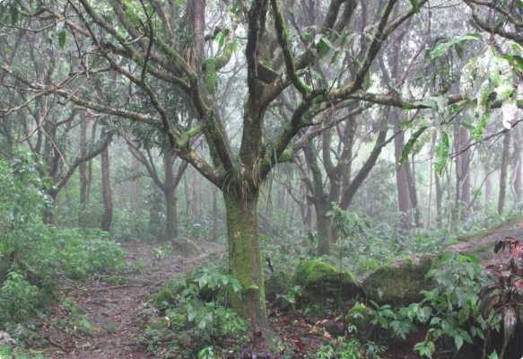

                            <p>Sewage treatment station</p>

                            <p>Water naturally cleans itself when flowing in
                                preserved paths without much human
                                interference. It has always been like that, In
                                these paths, human interference. It has
                                always been like that, . In these paths, the
                                gravel, the sand, the curves and the</p>

                            <p>obstacles block the coarser dirt, which
                                little by little is incorporated by biological
                                processes. The plants, algae, bacteria,
                                fungi, and all living beings that use water
                                in their life cycles, purify and clean
                                the finest impurities the coarse dirt,
                                mitch little by little is incorporated
                                by biological processes. But as the
                                human population increases and
                                concentrates itself we copy nature
                                in it, process, but, of course, we do
                                it much faster than nature’s pace.</p>

                            <p>A sewage treatment plant imitates,
                                concentrates, and artificially
                                intensifiesthe physical, chemical,and
                                biological processes that would
                                naturally occur in a river in its
                                cleansing
                                flow. This technology has made it
                                possible for us to live in cities;
                                without it, the diseases derived from
                                mistreatment of the water would
                                have prevented today's population
                                densification.</p>

                            <p>Human beings have invented a time that is unrelated to
                                the environment they live in, unrelated to the
                                environment they are.</p>

                            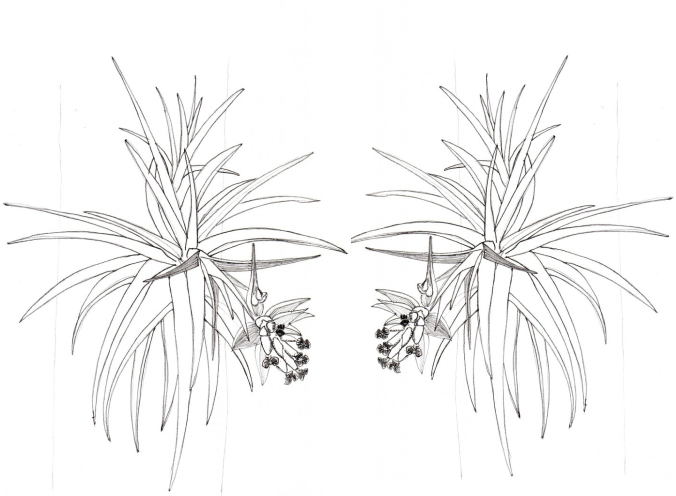


                        </div>

                        <div class="forty">

                            <h4>The Path</h4>
                            <i>poem by a neighbor</i>
                            <p>From the spring, we walk on the
                                riverbed as if we were also water.
                                To be water is to flow, to adapt;
                                it is to occupy the lowest places;
                                it is to nourish life wherever it passes.
                                The path that water takes is not always
                                the shortest,</p>
                            <p>but the most natural.</p>
                            <p>
                                We walk on the riverbed because the
                                banks have an owner,
                                but the water path
                                belongs to the people,
                                to the plant,
                                to the animal,
                                to the sea
                            </p>
                            <p>
                                <i>Half of the way, and we are
                                    surprised by the rain</i>

                            </p>
                            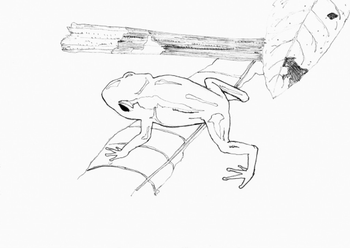

                            <h4> The Flying rivers</h4>
                            <p>The flying rivers are large
                                volumes of water vapor that
                                flow through the air,
                                regulating the climate of
                                many regions. It is because
                                of the "flying rivers" that
                                the southeast region of
                                Brazil is not one big desert
                                like other regions in the
                                same latitude, such as the
                                Atacama desert.</p>
                            <p>When it rains here it brings
                                water from the Amazon, from
                                the Atlantic Ocean.</p>
                            <h4>Water Governance
                                in Brazil</h4>
                            <p>
                                Water governance
                                structures overflow
                                governmental
                                boundaries. Rivers cross
                                properties,
                                municipalities, states,
                                and even national
                                borders.
                                In Brazil all waters
                                belong to the Union or
                                to the states. There is
                                no private ownership of
                                the waters, and no
                                municipal management.
                                Brazil follows a water
                                resources management
                                model implemented in
                                1988 that was based on
                                the example of France
                                and Germany.
                            </p>
                            <p>
                                They are what we call "basin
                                committees", tripartite
                                committees formed by
                                government, users and civil
                                society. Thus each river basin is
                                managed based on its
                                particularities and the various
                                interests
                                involved in it.
                                Water flows, it is its nature.
                                There are many attempts to
                                contain the water, to change its
                                course, to narrow its
                                passage, but the water remains
                                flowing.
                            </p>
                            <div class="forty">
                                <video controls class="full">
                                    <source src="assets/Ribeirao/video03.mp4" type="video/mp4">
                                </video>
                            </div>

                            <p>The rain</p>

                            <p>Water that comes from the
                                earth is a river.
                                Water that comes from the
                                sky is rain.
                                Rain also has no owner and is
                                also a miracle.</p>

                                <p>The infinity of the sky is
                                    a mystery.
                                    It rained and the
                                    Ribeirão was agitated
                                    and muddy,
                                    but just keep flowing
                                    and
                                    soon its waters will be
                                    calm and crystalline
                                    again.
                                    All you have to do is be
                                    patient.</p>
                        </div>
                        <div class="full">As common goods, it is necessary to create legislations that regulates access
                            Because they are common, it is necessary to create legislation that regulates access.
                            This should not be done by the interest of capital, and neither should it be done within
                            institutions disconnected from the people and their own organizational structures.</div>
                    </div>
                    <div class="flex">
                    <div class="forty">
                        <h3>PART III<br>
                            Unloads</h3>

                        <div class="full">
                            <video controls class="full">
                                <source src="assets/Ribeirao/video04.mp4" type="video/mp4">
                            </video>
                            <p>
                                On the way we met other
                                species walking in groups
                            </p>

                            <p>This article was a collective challenge,
                                a cut and paste
                                of words and pictures that emerged
                                within us. When we
                                started writing, we were receiving and
                                remembering
                                communitary expressions that also
                                used this theme.
                                A diverse group brought biology and
                                geography
                                research,drawings, walkings, poems
                                networks, performances and
                                movements.
                                Perhaps this is a search to better
                                comprehend the waters and
                                communicating flows as a common
                                significant.</p>
                                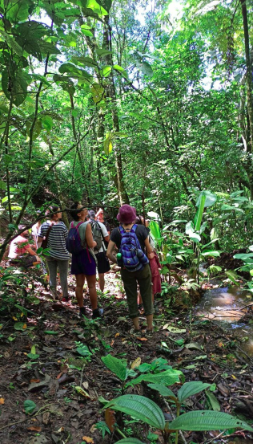

                                <h4>Water and internet have
                                    fences.</h4>
                                    <p>While in our community fences limit
                                        access and redefine the paths, on the
                                        internet fences reproduce the
                                        colonizer's indigenous villages. A
                                        space through which you move
                                        "freely" while your behavior is molded
                                        to civilization. Civilized is the one who
                                        consumes.</p>

                                        <h4>POEMS BY NEIGHBOORS</h4>

                                        <h4>The sea</h4>

                                        <p>The sea
                                            We dont get to sea, but at the same
                                            instant we drink the sprout`s water,
                                            the river arrives the sea
                                            Sea deep is mistery
                                            The water origin and its destiny is the
                                            mystery
                                            Our origin and our destiny is the
                                            mistery
                                            May the path we walk, between our
                                            origin and destination be like the path
                                            of water.</p>

                                            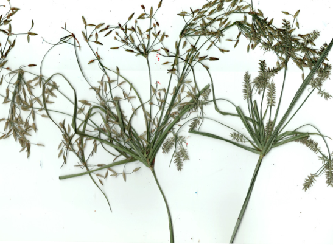

                                            <h4>The village that looked for a

                                                river</h4>
                                                <p>The children of he Souza neighborhood danced
                                                    an author`s story of a peaceful village at the
                                                    day of lost of the Water Goddess amulet. From
                                                    then, they see their spring river disappear and,
                                                    moved by need and thirst, go on an adventure
                                                    to search water.</p>

                                                    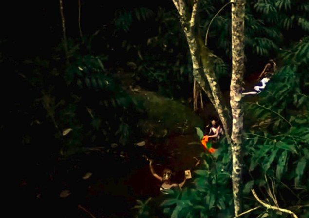

                                                    <p>We like the challenging moment when our lives have
                                                        sprouted.
                                                        We seek to transist because we see giant
                                                        possibilities to transform. We want to embrace the
                                                        individualism that has made us understand so much
                                                        of our essences and create new ways of caring
                                                        together. We want small managements that can
                                                        apply all the knowledge already created globally, but
                                                        that is decided locally by those who matter. We want
                                                        a common protocol, but we want diverse languages.
                                                        We want our non-useful life time, the time for the
                                                        river to turn into sea; the time for the sea to turn
                                                        into a river that flies; the time for the river to rain on
                                                        us.</p>

                                                        <h5>The best thinking is done collectively.</h5>
                        </div>
                    </div>

                    <div class="forty ml10">
                        <h4>A sea of PSP possibilities</h4>
                        <p>Closer to our 7th year of association we had
                            dived into different waters. A lot of people
                            and ideas come and go. While when we
                            started our mission was to connect the
                            unconnected to the internet, we are now
                            reflecting on how to significantly connect
                            the already connected, because connecting
                            people to the shadow of connectivity, just
                            because they "need" to be connected may
                            end up becoming a favor to the lords of the
                            vigilant society of data capitalism.
                            We might be just a drop in the ocean, but
                            the ocean is made of many of us.</p>
                            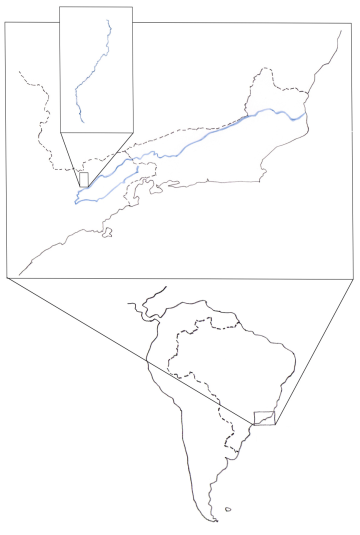
                            <p>Ribeirão da Paciência
                                flows in to the larger
                                river Paraiba do Sul,
                                that runs through
                                São Paulo to Rio de
                                Janeiro, were it meets
                                the ocean.</p>

                                <p>If :
                                    watershed = server
                                    /then information is right under the earth we step in.
                                    Water follows a flow from small towns to big cities. From
                                    the spring , to the sea. The internet has its flow in the
                                    opposite direction. deterritorialized technologies are
                                    trying to mold new behavior patterns.</p>

                                    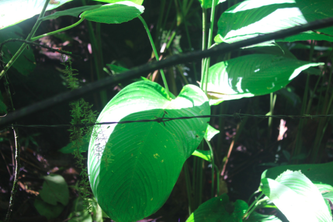
                                    <p>One of the fences on the trail</p>

                                    <h4>Occupy all the streets and
                                        waterfalls of Soujah</h4>
                                        <p>excerpts from Analuh's poem</p>
                                        <p>I'm a black woman
                                            I go on my way unfolding things
                                            I went to bathe in the river and a white
                                            man comes up to me
                                            Excuse me
                                            Here, I'm not gonna blah-blah-blah
                                            He comes to talk to me about notary,
                                            about property,
                                            about privacy
                                            Excuse meI'm cool with my friends
                                            My freedomYour money can't buy
                                            Now understand
                                            Once and for all I'm gonna talk
                                            Our freedomyour money can't buy!</p>
                                            <p><strong>*For every barbed wire there's
                                                always a set of pliers!</strong></p>
                                                <p>...<br>Water is my prayer
                                                    Evolve your mind
                                                    here there is no competition
                                                    Let's heal
                                                    Transform our mentality
                                                    Let's rhyme and learn to confront this
                                                    approach
                                                    utilitarian approach
                                                    The land is our mother and not a
                                                    product
                                                    Don't talk about deserving
                                                    I was born without a cent"</p>
                                                    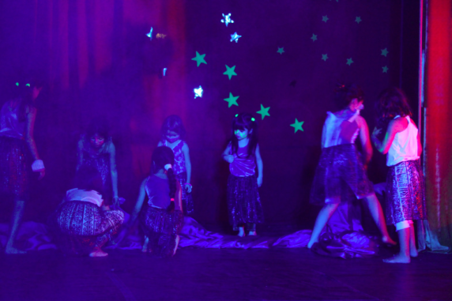
                                                    <h4>A symbolic path - river talk</h4>
                                                    <p>"River" is a performance at the Patience river
                                                        in honor of Oxum, the queen of the rivers, a
                                                        female orixá, that presides over fresh water
                                                        and is one of the main and most worshiped
                                                        entities in Afro-Brazilian cults.</p>
                                                        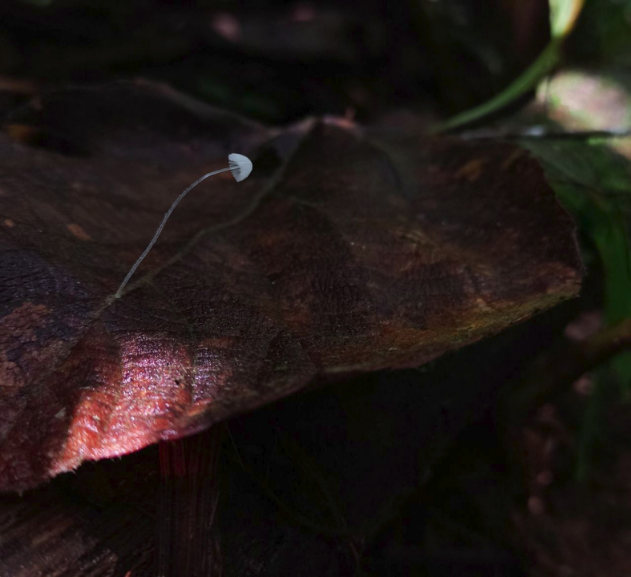
                    </div>
                </div>
            </div>
            <div class="content-background full">
                
            </div>
        </main>
</body>

</html>